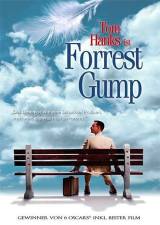
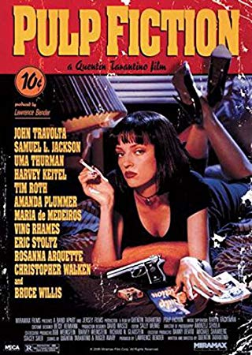
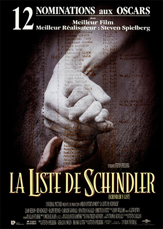

Entrepreneur dans le secteur industriel. Ma mission: Wait and see.
See for yourself|  |
Forest GumpAu fil des différents interlocuteurs qui viennent s'asseoir tour à tour à côté de lui sur un banc, Forrest Gump raconte la fabuleuse histoire de sa vie. Sa vie est à l'image d'une plume qui se laisse porter par le vent, tout comme Forrest se laisse porter par les événements qu'il traverse dans l'Amérique de la seconde moitié du 20e siècle |
|  |
Pulp FictionL'odyssée sanglante et burlesque de petits malfrats dans la jungle de Hollywood à travers trois histoires qui s'entremêlent. Dans un restaurant, un couple de jeunes braqueurs, Pumpkin et Yolanda, discutent des risques que comporte leur activité. Deux truands, Jules Winnfield et son ami Vincent Vega, qui revient d'Amsterdam, ont pour mission de récupérer une mallette au contenu mystérieux et de la rapporter à Marsellus Wallace |
|  |
La liste de SchindlerLes Allemands, victorieux de la Pologne, regroupent les Juifs dans des ghettos dans le but de s'en servir comme main d'oeuvre bon marché. Oskar Schindler, industriel et bon vivant, rachète pour une bouchée de pain une fabrique d'ustensiles de cuisine. |